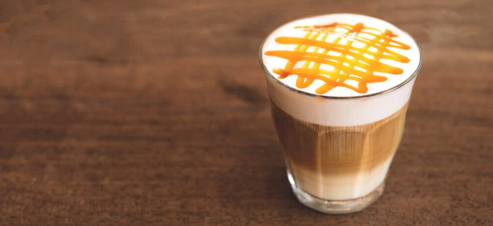
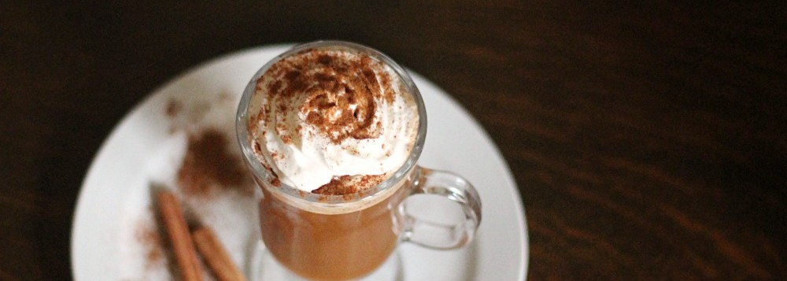

Como en casa Caramel Machiatto
Ingredientes para realizar un rico Caramel Machiatto en casa:
- 4 cdas de azúcar
- 10 cdas de agua o 2/3 taza
- 1 cdta Esencia de vainilla
- Salsa de caramelo
- 1 taza de leche
- Café instantáneo o espresso ( 2 shots )
Otra rica receta Cinammon Dolce Latte
Ingredientes para realizar un Cinammon Dolce Latte en casa:
- Azúcar negra o rubia
- Rama de canela
- Canela en polvo
- Leche
- Crema batida
- Café
También frío Frappuccino Mocha
Ingredientes para realizar un rico Mocha Frappuccino en casa:
- 50g de chips de chocolate
- 120ml de leche
- 12 cubitos de hielo
- 1 cdta esencia de vainilla
- Crema batida
- Salsa de chocolate